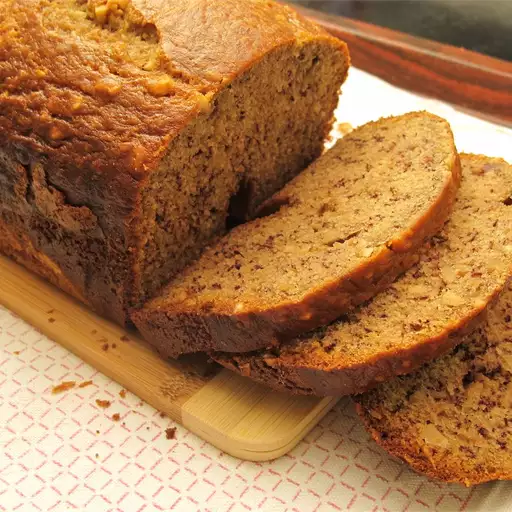

Banana Bread

Description
This bread machine banana bread is quick and easy to make using the Dough setting for mixing, then Bake with the control set to light.
Total Time: 1 hr 15 mins
Ingredients:
- 2 bananas, peeled and halved lengthwise
- 2 cups all-purpose flour
- 3/4 cup white sugar
- 2 large eggs
- 3 tablespoons vegetable oil
- 1 teaspoon baking powder
- 1/2 teaspoon baking soda